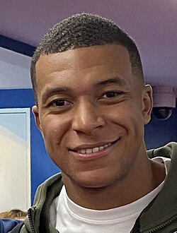
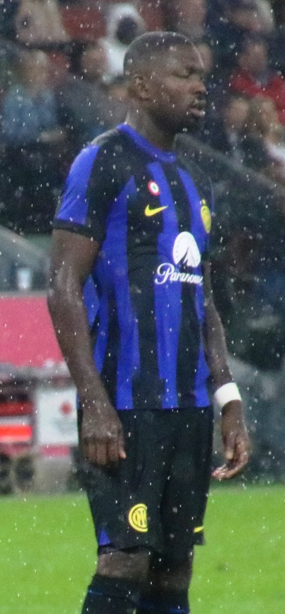

| Nombre | Posición | Edad | Bibliografía | Portada |
|---|---|---|---|---|
| Kylian Mbappé | Delantero | 25 |
Figura estelar de Francia y del Real Madrid. Conocido por su velocidad, definición y capacidad de liderazgo en el ataque. |
 |
| Aurélien Tchouaméni | Centrocampista | 24 |
Mediocampista del Real Madrid. Destacado por su recuperación de balón, visión de juego y llegada al área rival. |
|
| Randal Kolo Muani | Delantero | 25 |
Delantero del Bayern Múnich, reconocido por su capacidad goleadora y movilidad en ataque. |
|
| Ousmane Dembélé | Extremo | 26 |
Extremo del Paris Saint-Germain, habilidoso en el uno contra uno y con gran velocidad para desbordar por las bandas. |
 |
| Adrien Rabiot | Centrocampista | 27 |
Mediocampista de la Juventus. Fuerte en recuperación y distribución de balón, aporta equilibrio al mediocampo. |
|
| Ibrahima Konaté | Defensa central | 25 |
Defensor central del Liverpool, sólido en marca, anticipación y juego aéreo. |
|
| Benjamin Pavard | Defensa | 27 |
Lateral derecho del Olympique de Marsella. Conocido por sus centros precisos y capacidad defensiva. |
 |
| Theo Hernández | Lateral izquierdo | 26 |
Lateral izquierdo del Al-Hilal SFC, rápido y ofensivo, destaca por sus incorporaciones al ataque. |
 |
| Lucas Hernández | Lateral izquierdo | 28 |
Lateral del París Saint-Germain, combina experiencia defensiva con proyecciones al ataque. |
|
| William Saliba | Defensa central | 24 |
Defensa del Arsenal, destacado por su anticipación, fuerza física y liderazgo en la zaga. |
 |
| Rayan Cherki | Delantero / Extremo | 21 |
Delantero del Olympique de Lyon, joven promesa con gran habilidad, regate y visión de juego. |
|
| Marcus Thuram | Delantero | 26 |
Delantero del Inter de Milán, potente y habilidoso, aporta goles y desborde al ataque francés. |
 |